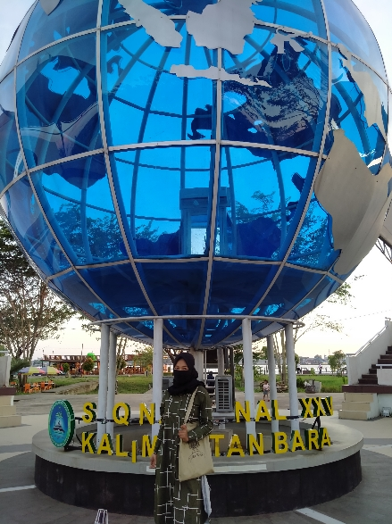
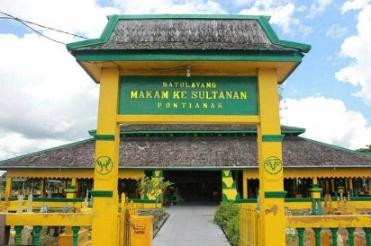

TUGU KHATULISTIWA
Tugu Khatulistiwa atau Equator Monument berada di Jalan Khatulistiwa, Pontianak Utara, Provinsi Kalimantan Barat. Tugu ini menjadi salah satu ikon wisata Kota Pontianak dan selalu dikunjungi masyarakat, khususnya wisatawan yang datang
ke Kota Pontianak.
Selengkapnya ->

MAKAM KESULTANAN
Makam Kesultanan Pontianak di Batu Layang merupakan aset ketiga warisan Kesultanan Pontianak sesudah Istana Kadriah dan Mesjid Sultan Abdurrahman. Konon ketiga lokasi ini mempunyai letak dengan garis lurus dari istana, dari arah timur
ke barat.
Selengkapnya ->